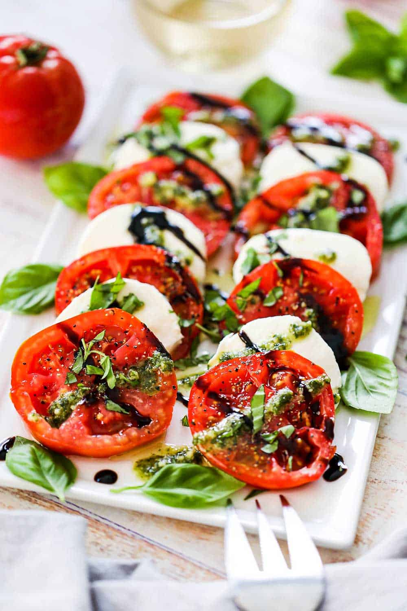

Caprese Salad

An image of a caprese salad
This recipe is another good one for tomato season. It requires no cooking and makes for a perfeclt lunch on a weekend.
Ingredients
- Three ripe tomatoes
- Fresh basil
- Mozzerella
- Olive oil
- Balsamic vinegar
- Salt
- Pepper
- Bread
Steps
- Prepare the ingredients. Slice the tomatoes and tear the basil leaves off of the stem.
- Arrange the tomatoes over a plate.
- Spread basil leaves over tomatoes.
- Tear apart mozzerella over the basil leaves.
- Spread desired amount of olive oil, vinegar, salt, and pepper over the salad.
- Serve with bread.